Liquid Dungeon Byproduct
Liquid Dungeon Byproduct is a collaboration by
Porpentine Charity Heartscape
(words),
ESPer99
(sounds), and Tabitha Nikolai (visuals).
Welcome to the Dungeon. You have been here since the 5th grade, though in dreams you
glimpsed it long before. Through your symbiosis with the dungeon we glean Liquid Dungeon
Byproduct. It flows over you and through you.
Liquid Dungeon Byproduct is a job creator.
Liquid Dungeon Byproduct is your constitutionally protected right.
Liquid Dungeon Byproduct is a bespoke smoothie of cortisol, lactic acid, and diesel.
It is regrettable that a rhetorical environment has sprung up in which the dungeon is
maligned as a “carceral landscape” and “sword-industrial complex.” The droplet diffusion
model of an orc’s exploding chest would never have been modeled without the research
opportunities provided by the dungeon. A nine-year-old, bald, diverse girl is receiving
medical care because of the dungeon. Her eyes reflect the iconic armor outline of the
brave, yet non-toxically masculine men, women, men-identified people, and women-identified
people bravely spelunking the dungeon. A bipartisan path forward. A cure for mana rash and
autism. Hands across the future. Elves and humans. We thank you for your service. You are
the dream you’re looking for.
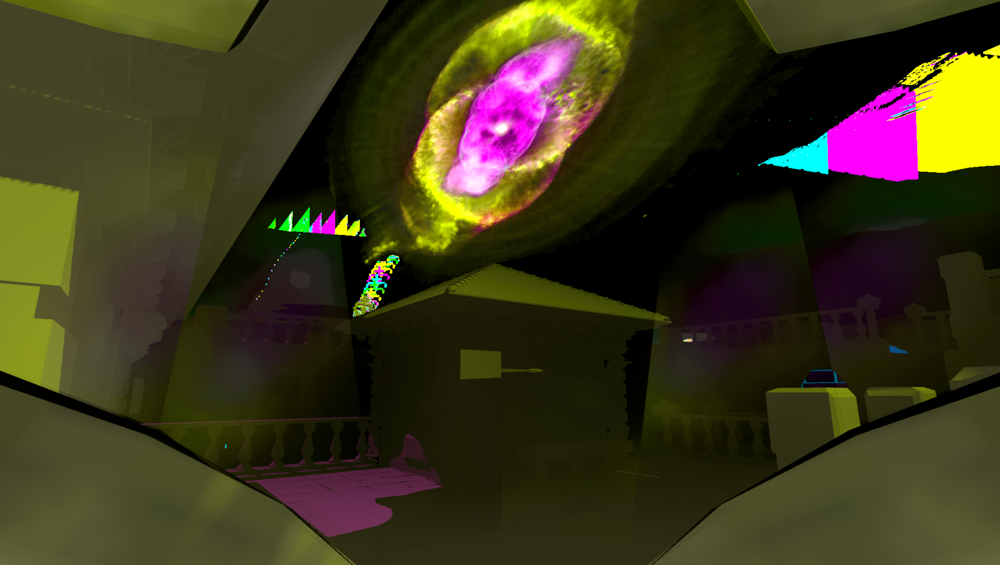
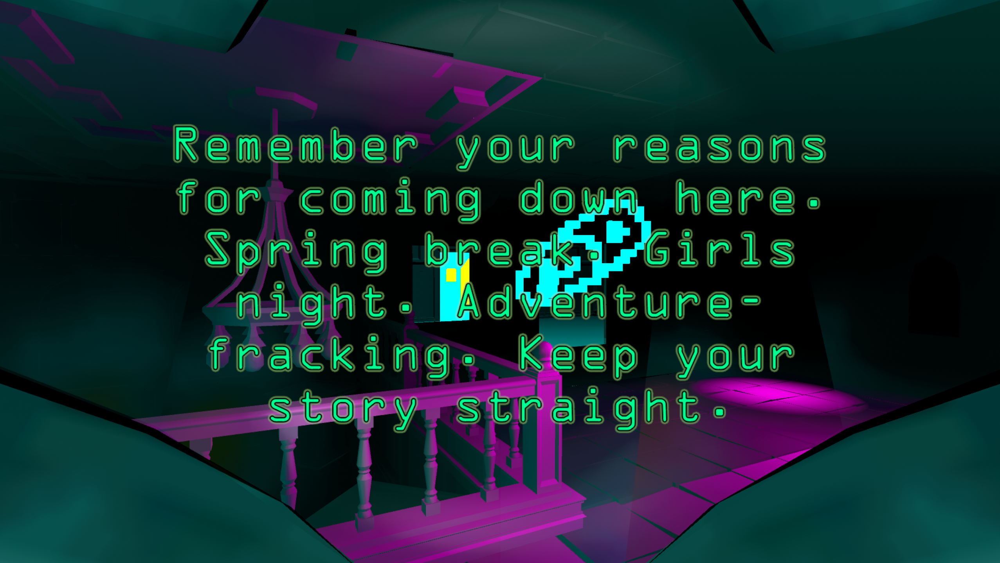
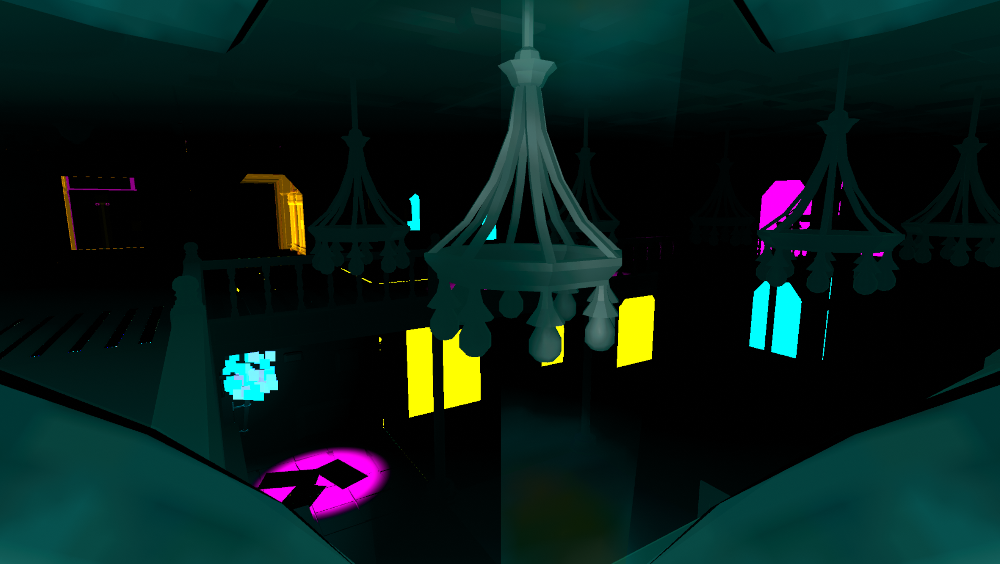
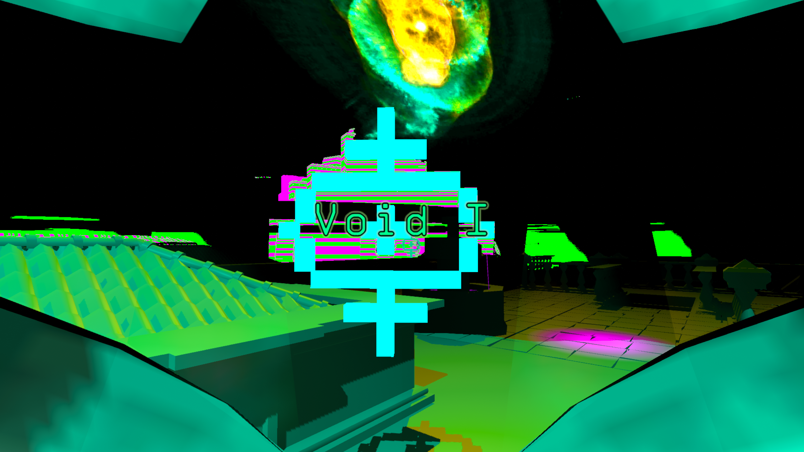
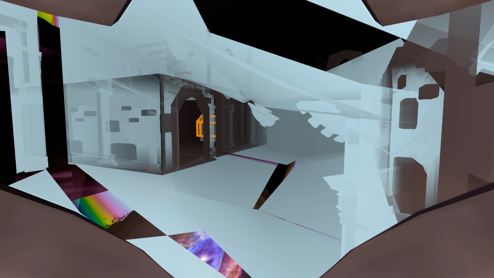
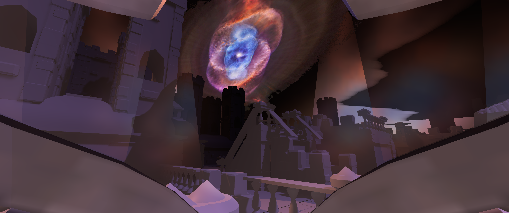
Liquid Dungeon Byproduct was exhibited at
HOLDING Contemporary in Portland, Oregon (October 2020)
Photos courtesy of Mario Gallucci
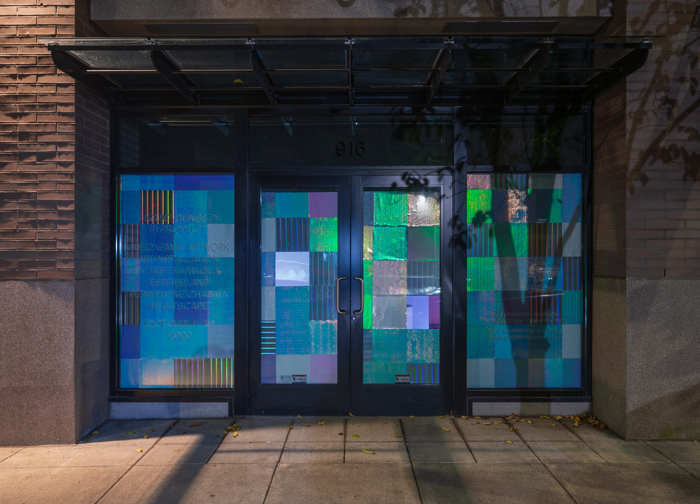
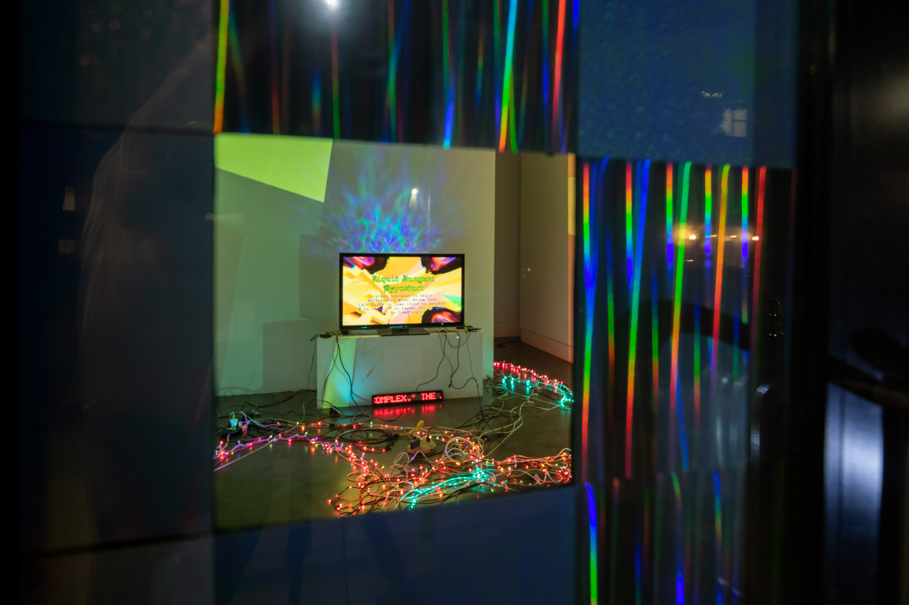
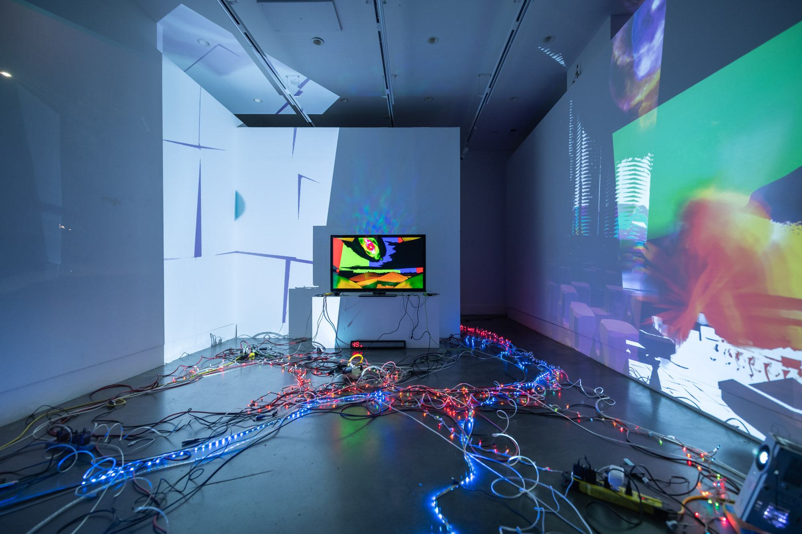
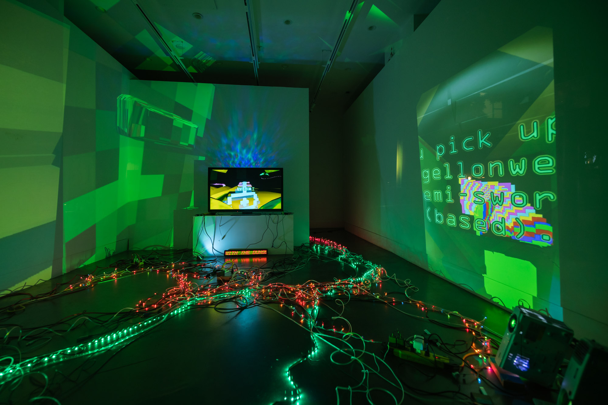
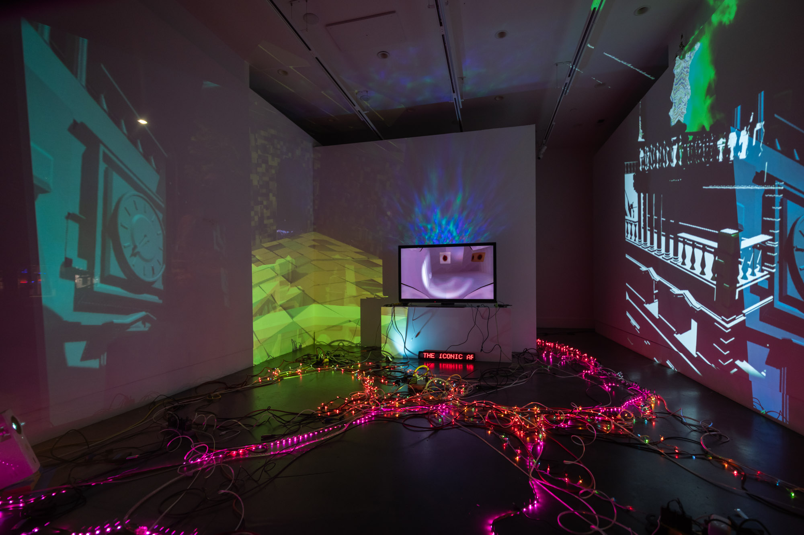
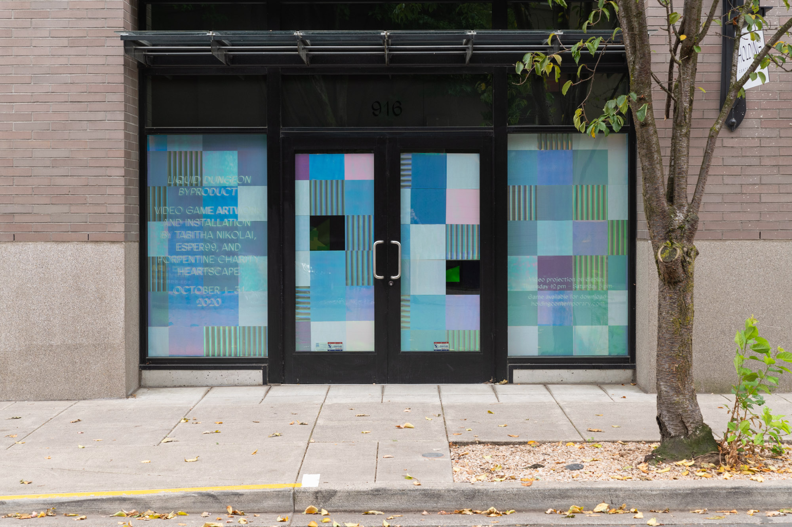